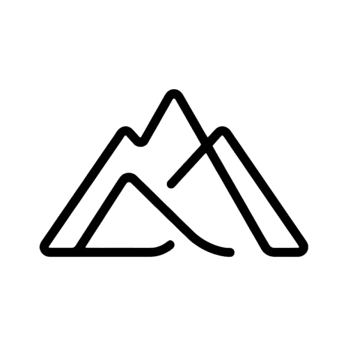

Standalone verifier · no Meru backend in the loop

Verify a Meru bundle
Paste a tokenId and a bundleHash from any Meru audit entry. This page reads the inference event directly from 0G Chain and the mirrored attestation from Sepolia, recomputes the digest locally, and tells you whether the bundle was honestly anchored. No call hits Meru's servers — the trust root here is the chains themselves.
InferenceLogged event found on 0G Aristotle
On-chain bundleHash matches input
Signer is the corpus's bound teeAttestationSigner
Sepolia mirror has the same bundleHash
What this page does: queries the 0G Aristotle RPC at
https://evmrpc.0g.ai and the Sepolia RPC at
https://ethereum-sepolia-rpc.publicnode.com for the on-chain audit data
bound to the provided tokenId. It then recomputes
whether the bundle hash matches and whether the same hash is present on the
mirror. No call leaves your browser to a Meru server.
What this page does not verify: the bundle's
plaintext content (we don't have it — only the hash is on-chain).
That's by design: the audit substrate publishes hashes, not payloads, and
the plaintext is independently retrievable from 0G Storage by the corpus owner.
Full integrity story:
THREAT-MODEL.md ·
MERU-VS-PCC-VS-DSTACK .
Provenant contract on 0G Aristotle: 0xA8296DfF7C2faD1170e880d71aF92B2F201D30C5.
Reader on Sepolia: 0xA8296DfF7C2faD1170e880d71aF92B2F201D30C5.